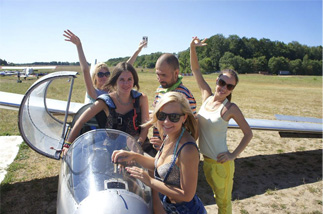

КАК ЭТО РАБОТАЕТ
КАК ЗАПИСАТЬСЯ НА ПОЛЁТ
- Летите!
- Прослушайте короткий предполётный инструктаж и программу полёта.
- Приезжайте на аэродром — мы Вас встретим!
- Свяжитесь с нами за день до полёта и удостоверьтесь, что завтрашний день — лётный.
- Запишитесь на полёт с помощью простой формы. Записаться
Оплатить полёт вы можете двумя способами:
- Купить сертификат при записи.
- Оплатить непосредственно после полёта.
Срок действия сертификата — 12 месяцев с момента заказа.
КАК ПРОХОДИТ ПОЛЁТ
Вас встречают, инструктируют, надевают парашют и помогают занять место в кабине планера.
В случае нелетной погоды мы переносим полет на другой день!
Руководитель полетов разрешает взлет, после чего «аэропоезд» из двух летательных аппаратов начинает разбег.
Инструктор объясняет работу приборов: высотомера, указателя скорости, компаса, пары вариометров. Скорость полета — 80-90 км/ч.
Пилот демонстрирует возможности планера и передаёт управление в ваши руки. Есть возможность для фотографий, съемок, а также для пробы пилотажных фигур типа штопора, спирали, пикирования, горки, петель*, невесомости. Планер имеет спаренное управление и инструктор контролирует каждое движение.
*только на пилотажных планерах - не на Бланиках
В КАКУЮ ПОГОДУ И ВРЕМЯ ЛЕТАЕМ
Полёты проводятся круглый год, ежедневно (кроме понедельника) в лётную погоду, только в светлое время суток.
Солнце прогревает поверхность земли, рождая теплые восходящие потоки. За их счёт и летают (парят) планеры G103C Twin lll, L-13 Blanik и другие.
Полёты невозможны при наличии осадков, сильного ветра или низкой облачности.
БЕЗОПАСЕН ЛИ ПОЛЁТ
Все наши полёты происходят под чутким контролем опытных инструкторов.
Наши пилоты располагают солидным налётом (сотни и тысячи часов) на планерах, участвуют в соревнованиях, любят свою профессию и несут полную ответственность за Вашу жизнь в небе.
Даже когда Вы пробуете сами управлять аппаратом, инструктор надёжно страхует полёт.
Все пилоты, управляя планером, руководствуются указаниями диспетчера, руководителя полётов.
В свою очередь, диспетчер даёт разрешение пилотам на каждое действие — от выезда на взлётную полосу до взятия курса — исходя из обстановки в воздухе и погоды.
Залог безопасности — предполётная подготовка:
- Все летательные аппараты тщательно осматриваются техниками и пилотами-инструкторами.
- Оценивается метео-обстановка.
- Проверяется состояние здоровья пилота и пассажира.
- Проводится предполётный инструктаж.
Каждый летательный аппарат аэродрома Шевлино оснащён парашюютом, регулярно проходит проверку и поддерживается в состоянии лётной годности.
КТО ДОПУСКАЕТСЯ К ПОЛЁТАМ
|
На планере G103C Twin III
Рост: не более 210 см Вес: не более 120 кг |
На планере L-13 Blanik, AC-4-115
Рост: не более 192 см Вес: не более 95 кг |
Ограничения на полёты:
- Для детей от 16 до 18 лет — без письменного согласия родителей.
- Противопоказания к физическим и психическим нагрузкам.
- Серьёзные заболевания сердечно-сосудистой, опорно-двигательной и нервной систем.
- Беременность.
- Психические расстройства, суицидальные наклонности, состояние алкогольного опьянения.
СПИСОК НУЖНЫХ ВЕЩЕЙ

| Летом | Зимой, осенью, весной | |
|---|---|---|
|
|
|
Внимание! Одежда и обувь должны быть удобными, по погоде. Полёты выполняются только в обуви с закрытой пяткой, без каблука (желательна спортивная обувь). На высоте около 1000 метров может быть ощутимо прохладнее, чем на земле: в полёт отправляйтесь минимум в джинсах и ветровке.
Не берите алкоголь, так как в состоянии опьянения Вы будете отстранены от полётов.
РЕКОМЕНДОВАННАЯ ОБУЧАЮЩАЯ ЛИТЕРАТУРА
- КУЛП-ПСБ-2013 - Курс учебно-летной подготовки на планерах и на самолётах буксировщиках в авиационных организациях ДОСААФ России
- Эксплуатация и техника пилотирования серийных планеров
- В. Гончаренко «Техника и тактика парящих полетов»
- В. Гончаренко «По облачным дорогам»
- Х. Райхманн «Полеты на планерах по маршрутам». ДОСААФ СССР
- Ю. Герчиков «В защиту динозавров»